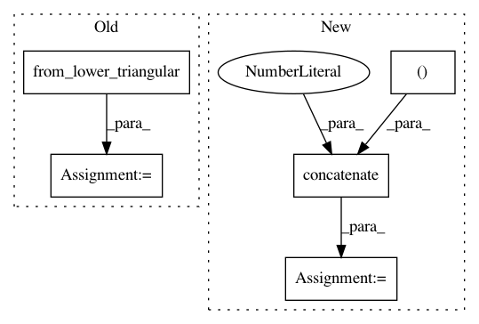

ede16d13e33e1fa0708e2547abee9a9c7dace1d1,dipy/reconst/fwdti.py,,nlls_fit_tensor,#Any#Any#Any#Any#Any#Any#Any#,497
Before Change
// If leastsq failed to converge and produced nans, we"ll resort to the
// WLS solution in this voxel:
except np.linalg.LinAlgError:
evals, evecs = decompose_tensor(
from_lower_triangular(start_params[:6]))
fw_params[vox, :3] = evals
fw_params[vox, 3:] = evecs.ravel()
fw_params[vox, 12] = start_params[7]
fw_params[vox, 13] = np.exp(-start_params[6])
After Change
s0 = params[13]
if cholesky:
start_params = np.concatenate((lower_triangular_to_cholesky(dt),
[-np.log(s0),
np.arcsin(2*f - 1) + np.pi/2]),
axis=0)
else:
start_params = np.concatenate((dt, [-np.log(s0), f]), axis=0)
this_tensor, status = opt.leastsq(_nlls_err_func, start_params[:8],
In pattern: SUPERPATTERN
Frequency: 3
Non-data size: 5
Instances
Project Name: nipy/dipy
Commit Name: ede16d13e33e1fa0708e2547abee9a9c7dace1d1
Time: 2016-08-29
Author: rafaelnh21@gmail.com
File Name: dipy/reconst/fwdti.py
Class Name:
Method Name: nlls_fit_tensor
Project Name: nipy/dipy
Commit Name: ed2b80836fb92142143d8b7702d5519761671cf5
Time: 2015-07-08
Author: rafaelnh21@gmail.com
File Name: dipy/reconst/dki.py
Class Name:
Method Name: _ols_iter
Project Name: nipy/dipy
Commit Name: acdb39c2f40fa90a033e895f09d8d02b02e85e9b
Time: 2016-08-29
Author: rafaelnh21@gmail.com
File Name: dipy/reconst/fwdti.py
Class Name:
Method Name: nlls_fit_tensor